フラクタルを描く
樹木や、葉脈、稲妻など、自然界にある形の中には、同じ形(パターン)が小さくなりながら繰返され、全体として複雑な形を成しているものがあります。 自分自身の形はそのまま、大きさを変えたものが自己相似形です。自己相似形が小さくなりながら繰り返して生まれる形態を、1975年に数学者マンデルブローがフラクタルと呼びました。左図はリアス式海岸線のようなコッホ曲線(線分を3分割しながら二等辺三角形を描く)、右図はシダのようなピタゴラスの木(直角三角形とその辺上の正方形からなる相似形)です。
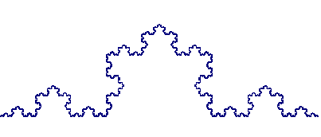
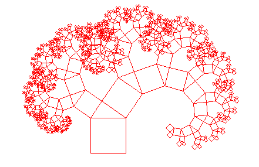
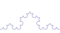
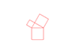
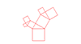
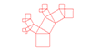
自分自身が小さくなりながら、入れ子のように形作られるフラクタル図形を描くプログラムは、再帰関数と呼ばれる関数を使うとスマートに書けます。 まずは再帰関数を理解し、フラクタル図形を描いてみましょう。
再帰関数
再帰関数とは、その関数の中から、自分自身を呼出している関数で、自分自身を呼出すことを、再帰呼出し(recursion)といいます。再帰呼出しをするかしないかを決める値を引数で渡し、その値しだいで、関数の実行中に自分自身を再び先頭から実行します。関数が入れ子のように、呼び出されていくわけです。リスト4-2で、同心円を描く関数を定義しました。リスト4-2では、drawDoshin()関数を4回呼出して、4つの同心円を描いています。drawDoshin()関数を一部書き換えて再帰関数drawDoshinR()とし、それを使って同じ描画をするプログラムがリスト8-1です。
drawDoshinR()には、元々の引数である同心円のx、y座標、円の間隔に加え、これから自分自身を何回呼出すかを示す引数nを加えています。4つ目の引数nの値が1より大きい時はまだ同心円を描く必要があるので、再帰呼出をします。この時、呼出し回数を表す引数は1減ってn-1とします。setup()からはdrawDoshinR()は1回だけ呼出されています。これが一番左の同心円を描き、その次の再帰呼出により、左から2番目の同心円が描かれ、その次の再帰呼出しで3番目の同心円が描かれ、、と続きます。
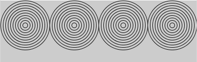
【リスト8-1】
void setup() {
size(400, 125);
noFill();
drawDoshinR(50, 50, 10, 4);
}
// 同心円を描く再帰関数の定義
void drawDoshinR(float x, float y, float d, int n) {
for (int i=1; i<=10; i=i+1) {
ellipse(x, y, d*i, d*i);
}
if(n>1){
drawDoshinR(x+100, y, 10, n-1);
}
}
この例(同心円を横に複数描く)では、再帰関数を使っても、そうでなく普通の関数を複数回実行しても、差はありません。わざわざ再帰関数を使う利点はないのですが、関数の中から自分自身を複数回呼出すような例では、普通の関数を繰返し呼出す方法で実現するのは容易ではありません。そのような例をみてみましょう。
入れ子の円のフラクタル図形
図のように、円が自分の大きさを半分にしながら、内側に２つずつ入れ子状になるフラクタル図形を考えます。 繰返される図形は、ひとつの円の中に大きさが半分の2つの円を左右に描いたものです。それを実現するため、再帰関数circlesRは一つの円を描き、続いて位置と大きさを変えて自分自身を2回呼出します。
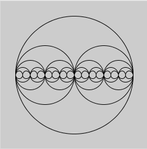
【リスト8-2】
void setup() {
size(250, 250);
noFill();
circlesR(125, 125, 100, 5);
}
void circlesR(float x, float y, float r, int n) {
ellipse(x, y, r*2, r*2);
if (n>1) {
float newR = r/2;
circlesR(x+newR, y, newR, n-1); //右側の円
circlesR(x-newR, y, newR, n-1); //左側の円
}
}
再帰関数の中身をみると、2つの仕事に分かれることがわかります。
(1)自分が直接担当する仕事(描画) → (x,y)の位置に半径rの円を描く
(2)引数を変えて、再帰呼出し
→ 円の中心を半径の半分右へ移し、半径を半分にし、回数を1減らし、再帰呼出し。
→ 円の中心を半径の半分左へ移し、半径を半分にし、回数を1減らし、再帰呼出し。
再帰の制御を別のやり方で書くこともできます。リスト8-2では、円を描き(1)、nが1より大きい(まだ入れ子が続く)時だけ、再帰呼出し(2)をしていますが、同じことは次のようにも書けます。
void circlesR(float x, float y, float r, int n){
if(n<=0){ return; } //nが0以下なら以後は実行せずに、ここで関数を終了
ellipse(x, y, r*2, r*2);
float newR = r/2;
circlesR(x+newR, y, newR, n-1);
circlesR(x-newR, y, newR, n-1);
}
nが0以下の(もう繰返しを終了した)時は何もせず、それ以外の時は、円を描いて(1)、再帰呼出し(2)をしています。
return;は関数の実行をそこで終了させるための命令です。nが1以上の時は、(1)と(2)の仕事をします。nが1の時(入れ子はもう続かない時)、nに0を指定して再帰呼出しを行いますが、nが0だと関数は何もしないで終了するので、繰返しは適切に終了します。
木のフラクタル図形
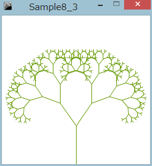
左図は木の枝分かれのように見えます。幹にあたる線から左右2本の枝がYの字形に伸び、その枝の先からさらに2本の枝が分かれ、それが繰り返されるフラクタル図形です。左図では、Yの字はその大きさが0.7倍に小さくなって繰り返され、幹から伸びる枝は垂直線に対して、35度傾いています。
この図形を描くプログラムがリスト8-3です。再帰関数drawTreeの仕事も2つに分けて考えられます。
(1)自分が直接担当する仕事(描画) → 1本の線(枝)を描く
(2)再帰呼出し → 線の先端から伸びる枝を描く
再帰関数drawTreeの引数は次のようにします。drawTreeが1本の線(枝)を描くために必要な情報である、枝の根本の座標、枝の長さ、枝の傾きを引数として渡します。
void drawTree(float x1, float y1, float len, float stand, int n) x: 枝の根元のx座標 y: 枝の根元のy座標 len: 枝の長さ stand: 幹の方向からの枝の傾き n: 残りの再帰回数再帰関数drawTreeの2つの仕事は具体的に次のようになります。
(1)自分が直接担当する仕事(描画)
→ 線(枝)先の位置(x2,y2)を計算し、枝元の座標(x1, y1)との間に線を描く。
(2)再帰回数が1以上の時は、引数を変えて、再帰呼出し
→ 枝先(x2,y2)から左側の新しい線を引く。
(x2,y2)を新しい根元とし、枝の長さを70%に、左に35度傾くように指定、回数を1減らして、再帰呼出し。
→ 枝先(x2,y2)から新しい線を引く。
(x2,y2)を新しい根元とし、枝の長さを70%に、右に35度傾くように指定、回数を1減らして、再帰呼出し。
【リスト8-3】
float scale = 0.7; // 枝の短くなる比率
float angle = 35; //枝の広がり
float len = 65; //最初の枝の長さ
int nn = 8; //枝別れの段数
void setup() {
size(250, 250);
background(255);
stroke(100, 153, 0);
drawTree(width/2, height, len, 0, nn);
}
void drawTree(float x1, float y1, float len, float stand, int n) {
float x2= x1 + len*sin(radians(stand)); //枝先のx座標
float y2= y1 - len*cos(radians(stand)); //枝先のy座標
line(x1, y1, x2, y2); //線を描く
if (n >= 1) {
drawTree(x2, y2, len*scale, stand-angle, n-1); //次の左の枝の再帰呼出し
drawTree(x2, y2, len*scale, stand+angle, n-1); //次の右の枝の再帰呼出し
}
}
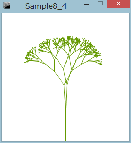
リスト8-3は、枝の広がりの角度が左右で同じなので、現実にはない整った形の木になります。角度をランダムにして、枝の広がりを不規則にしてみましょう。0からangleまでの間の乱数を枝の広がりの角度とします。drawTree()関数の再帰呼出しの部分(if (n >= 1)のブロック｛｝の中身)を次に変更します。
【リスト8-4】
float a = random(0, angle);//左枝の広がり
drawTree(x2, y2, len*scale, stand-a, n-1);
a = random(0, angle);//右枝の広がり
drawTree(x2, y2, len*scale, stand+a, n-1);
演習問題
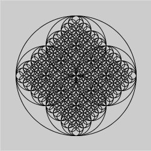
【問題8-1】リスト8-2の再帰関数circlesRは、2回自分自身を呼び出し、水平方向の直径に、入れ子の円を2つ描いていきます。これに手を加え、垂直方向の直径にも同じように入れ子状に2つの円を描くようにしてください。
クリックで新しい図形を描く
【問題8-2】リスト8-2は、内側の円を外側の円の水平な直径上に描き、すべての円の中心は1直線状に載っています。ある角度傾いた直径の上に内側の円を描くように変更してみましょう。傾く角度はランダムに決めることにします。直径の傾きは0から180度(πラジアン)の間です。random(PI)と書くと、0から180度(πラジアン)の間値がランダムに得られます。PIは、Processingがあらかじめ定義しているシステム変数で、円周率πの値が保存されています。
float angle = random(PI);angleの角度傾いた直径上に、大きさが半分の円を描くわけですが、その中心の位置を三角関数を使って計算します。下図を参考にしてください。
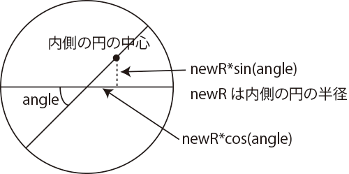
クリックで新しい図形を描く
【問題8-3】四角形を繰返し分割する図形を描くプログラムを作成してください。長方形の長い辺上にランダムに点をとり、短い辺と平行な線を引き、２つの長方形に分けます。こうしてできた2つの長方形に、同じことを行い、それぞれを2つの長方形に分けます。これをn回(例えば8回)繰り返すと、偶然性から生まれるミニマル・アートのような図形が得られます。左図は、クリックする度に新たに図形を描くようになっていますが、この練習問題では、マウスへの応答は不要で、実行したら一度四角形分割の図形が描くようにします。
再帰関数を最初に呼び出す前に、外側の四角形を描いておき、再帰関数が直接担当する描画は「分割する線を引く」だけです。再帰関数の引数は例えば次のようにします。
void devideRect(int x, int y, int w, int h, int n)
x: 分割する四角形の左上のx座標
y: 分割する四角形の左上のy座標
w: 分割する四角形の幅
h: 分割する四角形の高さ